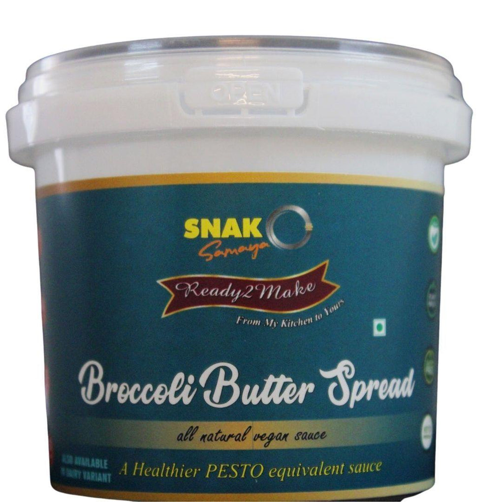

SNAK Samaya Vegan Broccoli Butter Spread ( a pesto equivalent) 300ml (Bangalore Only)
Use it as a vegan spread for sandwiches, wraps, stuffed vegetables, and meat and even in stuffed bread. Product needs to be cooked to add salt and spices to taste your recipe. Also suitable as pasta or pizza sauce just like the pesto.
Ingredients: Fresh Broccoli, Vegan Butter, Vegan cheese, Vegan milk, Italian herbs, Olive oil, Walnuts & Pink salt.
Shelf Life: 160 days this is a must have product in your refrigerator.